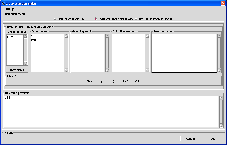

Next: selection from a selection
Up: Atom selection
Previous: selection from an expression
Contents
Group selection
This kind of selection is especially desgned for analysis based on group of atoms on which a given operation is performed
collectively. By collectively, we mean that the selected group of atoms will be treated as it was one object. For example,
in rigid-body based analysis, selecting a group of atoms will mean that this group will be considered as a single rigid-body
that will be used to derve the rigid-body trajectory. Another example, the study where one needs to define the center of mass
of a group of atoms in order to derive a property such as coordination number or spatial density (see Sections 4.2.6.2 and
4.2.6.3). In that case, a center of mass will be defined for each selected group of atoms.
By default, nMOLDYN consider all the atoms for a group selection. The dialog from which a group selection is performed is
displayed in figure 4.29.
Figure 4.29:
The dialog from where a group selection is performed.
|

|
At the bottom of the dialog, the Actions frame contains the Cancel button to cancel the selection and
the OK button to validate the selecton.
On the top of the dialog, three radiobuttons allows to select from which media the selection will be performed. This can be:
- from a selection file: this will perform the selection from a nMOLDYN group selection file,
- from the loaded trajectory: this will perform the selection directly from the contents of the universe contained
in the loaded trajectory,
- from an expression string: this will perform the selection from a valid python expression declaring a list
of atoms to include in the selection.
When clicking on one of these radiobutton, a media-specific dialog will be displayed in the underneath frame.
Subsections
Next: selection from a selection
Up: Atom selection
Previous: selection from an expression
Contents
pellegrini eric
2009-10-06